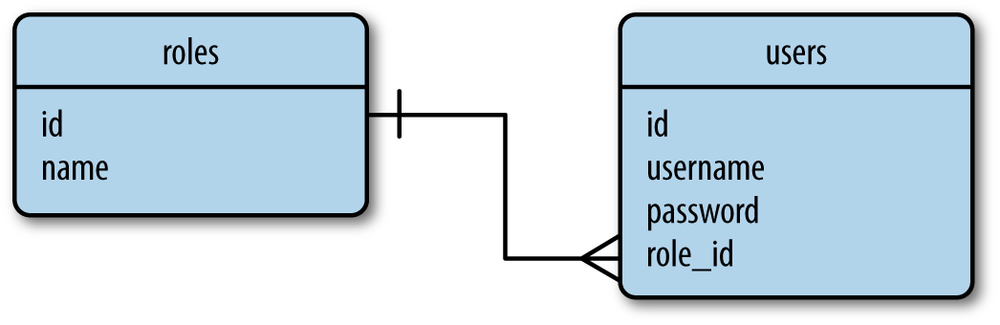

一个数据库存储应用程序数据在一种组织方式里。当数据被需求时应用程序然后提出queries疑问到取回明确的部分。为了web应用程序大多数常规地使用数据库是基于relational模式，也叫做它们用的关于结构疑问语言SQL数据库。但在近几年里，document-oriented数据库和key-value数据库，没正式被认可一起作为NoSQL数据库变成受欢迎的备选方案。
有关数据库把数据存储在表格里，哪一种模式不同的实体存在在应用程序的领域里。例如，为一个命令管理应用程序的一个数据库会有像customers，products和orders表格。
一个表格有一个固定的columns数字和一个可变的rows数字。列定义了通过表格表现出来的实体的数据属性。例如，一个customers表格将有如下列：name，address，phone等等。在一个表格里的每行定义了一个实际的数据元素，这元素是由为所有列的值组成。
表格有一个特殊列叫做primary key，这个primary key保持一个为每行存储在表格里特殊的标识。表格也能有叫做foreign keys的列，这个foreign keys注明从相同表格或者其它表格中的另一行的primary key。这些在称为relationships的行之间的连接是关系型数据库的基础。
图示5-1展示里一个带有2个表格的简单数据库的图表，2个表格存储了用户和用户规则。连接这2个表格的线表示出一个两表之间的关系。
图示5-1. 关系型数据库示例 
在这个数据库图表中，roles表格存储了所有可能的用户规则列表，每个用户规则通过一个特殊id值即表格的primary key来识别。用户表格包含用户列表，每个用户也都有它自己的特殊id。除了id的primary keys之外，roles表格有一个name列和users表格有username和password列。在user表格里的role_id列是一个foreign key，foreign key注明了一个规则的id出处，并且用这样的方式规则分配给每个被建立的用户。
在这个例子中所看到的，关系型数据库有效地存储数据以及避免副本。在这个数据库中重命名一个用户规则是简单的，因为规则名字存在在一个单独的地方。立即一个规则名字被改变了之后，所有用户有一个role_id注明改变了的规则将会看到更新。
另外一方面，拥有的数据分成多个表格会成为一个复杂。用用户的规则生产一个用户列表出现一个小问题，因为用户和用户规则需要从2个表格中读取以及在它们一起出现之前被加入。当需要时，关系型数据库引擎提供表与表之间执行加入操作支持。
数据库不会随着在前面部分描述的关系模型全部归类为NoSQL数据库。一个常见的NoSQL数据库组织使用collections来代替表格和使用documents来代替记录。NoSQL数据库以一种让加入困难的方式被设计出来，所以它们的大多数根本不支持这种加入操作。对于一个NoSQL数据库结构成像做图示5-1中那样，列出带有用户规则的用户需要应用程序自身执行加入操作，通过读取每个用户的role_id区域接着为加入操作搜索roles表格。
这里讲解了为了达到图示5-1的效果，SQL数据与NoSQL数据库在操作过程中的不同。SQL数据库是读取和加入两个操作，而NoSQL数据库是读取和搜索。也就是说NoSQL数据库用程序自身搜索功能代替了SQL数据库中的加入操作，因为在NoSQL数据库被设计时就取消了加入操作这个功能，这也是区别于SQL数据的特征。
为了一个NoSQL数据库的一个更适当的设计被展示在图示5-2中。这就是应用一个成为denormalization操作的结果，这种操作在数据副本花费上减少了表格的数量。
图示5-2. NoSQL数据库例子
一个带有这样结构的数据库随着每个用户都有规则名字明确地被存储着。重命名一个规则接下来的结果是产生一个高昂的操作，这个操作可能需要更新大量documents文档。
但用NoSQL数据库这不都是坏事。因为更快的疑问许可数据被复制。列出用户和用户规则是直接的，因为没有加入需要了。
在一个高效的紧密的形式中SQL数据库在存储结构化数据上胜出。这些数据库用大量长度来保护一致性。NoSQL数据放松了一些一致性需求并且作为一个结果有时能获得一个性能优势。
一个完全分析以及数据库类型的比较是超出本书范畴的。为了小尺寸到中型尺寸的应用程序，SQL和NoSQL数据库都是很好的选择，并且实际上有相等的性能。